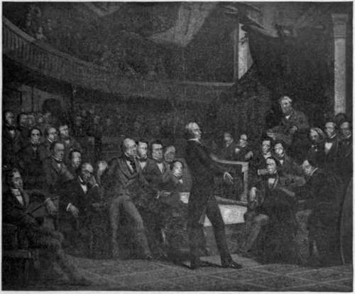

Farewells Of Calhoun, Clay, Webster
Description
This section is from the book "The National Capitol. Its Architecture Art And History", by George C. Hazelton, Jr. Also available from Amazon: The National Capitol Its Architecture Art and History.
Farewells Of Calhoun, Clay, Webster
Within these walls, the curtain fell for the last time on the parliamentary careers of the three most notable actors yet on the stage of American statesmanship—Calhoun, Clay, Webster. A frequent visitor to the Capitol during Jackson's administrations, S. G. Goodrich, writes : " It was a marked epoch, for Webster, Calhoun, and Clay were then in the Senate. It is seldom that three such men appear upon the theatre of action at the same time. They were each distinct from the other in person, manners, heart, constitution. . . . They were all of remarkable personal appearance : Webster of massive form, dark complexion, and thoughtful, solemn countenance; Clay, tall, of rather slight frame, but keen, flexible features, and singular ease and freedom in his attitudes, his walk, and his gestures. Calhoun was also tall, but erect, and rigid in his form—his eye grayish blue, and flashing from beneath a brow at once imperious and scornful. Mr. Webster's works abound in passages which convey beautiful sentiments in beautiful language—gems of thought set in golden sentences, fitting them to become the adornments of gifted and tasteful minds, for all future time. With these other orators it is not so : there is an earnest, direct, vigorous logic in Calhoun, which, however, can spare not a sentence to any subsidiary thought; there is a warm, glowing, hearty current of persuasion in Clay, yet he is too ardent in the pursuit of his main design, to pause for a moment to gather or scatter flowers by the wayside".
The South Carolinian was the first to retire. " Mr. Calhoun died," writes S. S. Cox, " on the last day of March, 1850, almost in the forum. The last words of his last speech in the Senate, uttered in the early part of that month, were these : ' Having faithfully done my duty to the best of my ability, both to the Union and my section, throughout this agitation, I shall have the consolation, let what will come, that I am free from all responsibility.' Two friends then led him out of the Senate Chamber, and his seat was vacant".
On the announcement of Calhoun's death to the Senate by his colleague, Judge Butler, Webster pronounced upon him an eulogium beautiful in its thought and utter forgetfulness of the past: " Sir, I have not in public or in private-life known a more assiduous person in the discharge of his appropiiate duties. We shall delight to speak of him to those who are rising up to fill our places. And, when the time shall come that we ourselves shall go, one after another, to our graves, we shall carry with us a deep sense of his genius and character, his honor and integrity, his amiable deportment in private life, and the purity of his exalted patriotism".
HKNRY CLAY'S FAREWELL From the original by P. F Rotkermel.
Clay, strangely enough, delivered two farewells to the S»nate. The first was the more effective; for an audience properly keyed is as necessary to true dramatic effect as the genius of the actor. It was the 31st day of March, 1842 ; the Kentucky Senator, the observed of all observers, arose in his place supposedly at the climax of a great career; and his listeners were breathless in anticipation. He was the picture of Southern gallantry—tall, erect, graceful, bold—with an eye that commands, a voice that attracts and a spirit that, proud in its own strength, holds itself dear ! The orator feelir^ly recalled his early struggles with poverty and privation, his later detractions, friendships and triumphs. His reference to his adopted State wrung tears even from his antagonists : I migrated to the State of Kentucky nearly forty-five years ago," said he. " I went there an orphan who had not yet attained his majority, who had never recognized a father's smile or felt his caresses—poor, penniless, without the favor of the great, with an imperfect and inadequate education, limited to the means applicable to such a boy; but scarcely had I stepped foot upon that generous soi 1 before I was caressed with parental fondness, patronized with bountiful munificence, and I may add to this that the choicest honors, often unsolicited, have been showered upon me; and when I stood, as it were, in the darkest moments of human existence—abandoned by the world, calumniated by a large portion of my own countrymen, she threw around me her impenetrable shield, and bore me aloft in her courageous arms and repelled the poisoned shafts of malignity and calumny aimed for my destruction, and vindicated my good name from every false and unfounded assault".
The very desks were listening. The scene was more impressive than one .from Shakespere's plays; for it was history, not drama! No mimicry, no masks, no tinsel, no curtains, no wings ! Theater, dress, characters, emotions —all real, terribly real ! Can we wonder then that all eyes were riveted upon the "Great Commoner"? Nay, even to-day, at the mention of his name, gray-beards give a nod and knowing look to presumptuous Youth, as if to say : " Sir, he belongs to our generation; you must not hope to produce his counterpart".
We can imagine only what must have been the scene as Henry Clay spoke his farewell lines : " May the blessing of Heaven rest upon the whole Senate and each member of it, and may the labors of everyone redound to the benefit of the nation and the advancement of his own fame and renown. And when you shall retire to the bosom of your constituents may you meet with that most cheering and gratifying of all human rewards—their cordial ' Well done, good and faithful servant.' And now, Messrs. President and Senators, I bid you all a long, a last and a friendly farewell".
Defeated for the third time for the Presidency, Clay's friends again induced him to don the robes of Senator. The Thirty-first Congress was to expire March 4, 1851. Before its end, the " Great Pacificator " was extremely anxious to force the passage of the River and Harbor bill, which had an undoubted majority in each House if a vote could be reached. There were Senators, however, who were determined to defeat the measure by proposing amendments and by " speaking against time when there is so little time left".
On the ist and 3d, Clay championed his cause in vigorous and subtle appeals, but in \ain. These, with the exception of a few remarks upon the session called for executive business, were his last parliamentary utterances.
Webster left the Senate two years before his death to become Secretary of State under Fillmore. On July 17, 1850, he made his final effort in that forum to prove the need of a disposition of the "Compromise Measures." His opening words were a graceful tribute to the memory of the late President, General Taylor. His last were a fitting farewell to the Senate, and to his own grand service there : " No man can suffer too much and no man can fall too soon, if he suffer or if he fall in defence of the liberties and Constitution of his country".
Continue to: